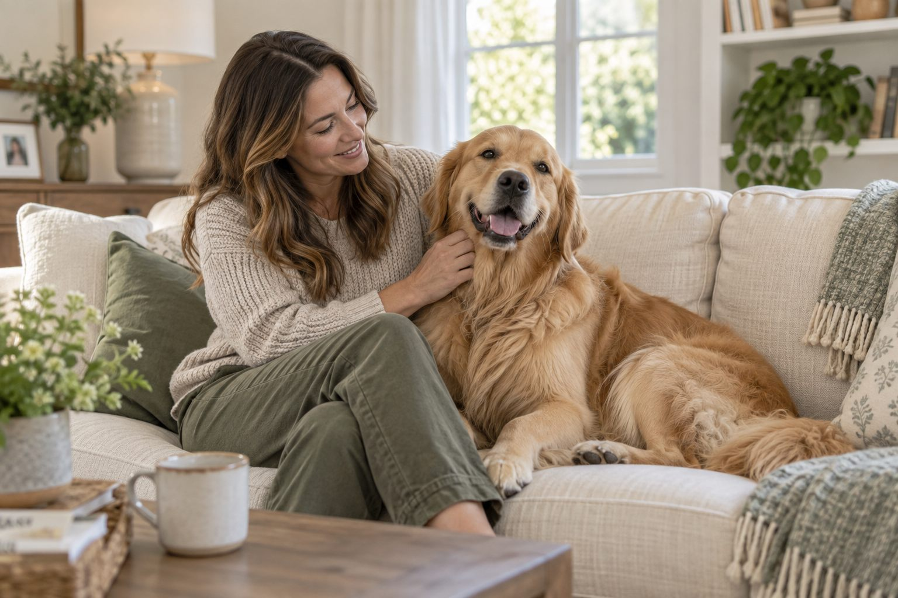
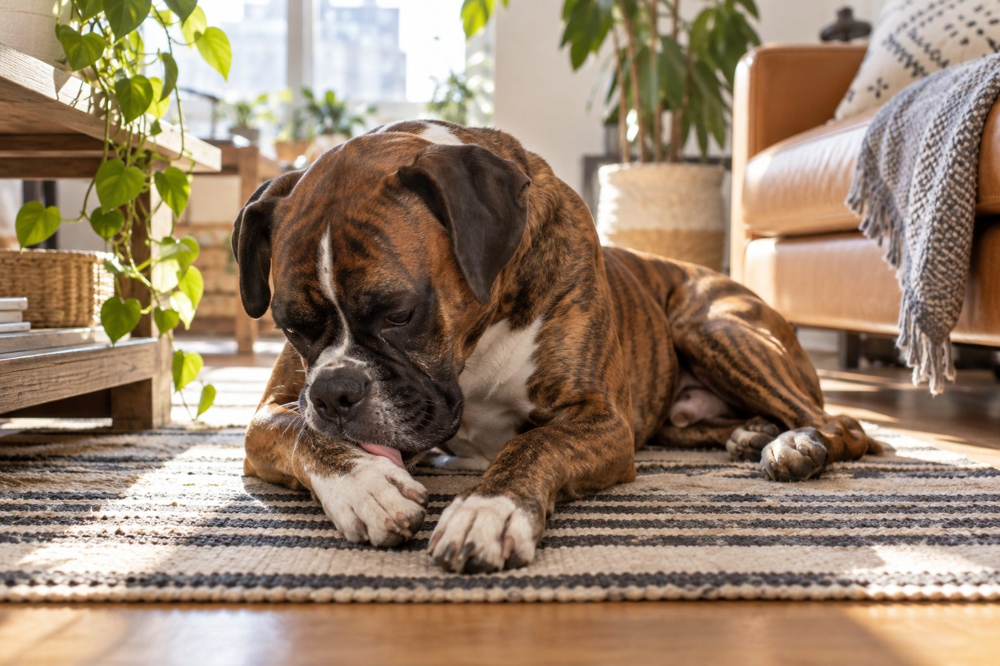
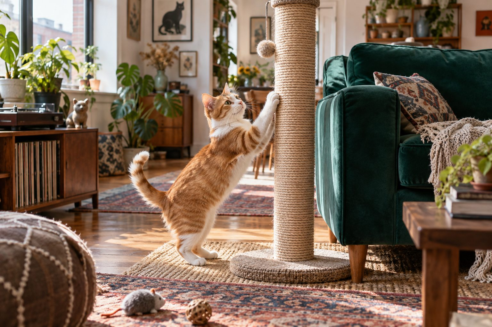
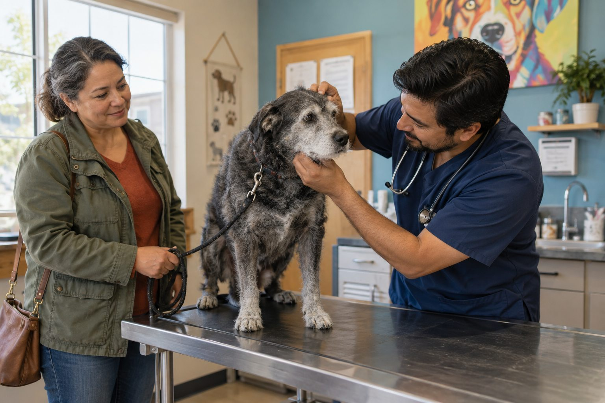

Training & Lifestyle
A Daily Routine That Enriches an Indoor Cat
A good indoor routine balances play, safe rest, and choice throughout the day.
A little care goes a long way
Clear, useful advice for the questions that come up in real life with dogs and cats.
Read the featured guide
The everyday guide
Fresh ideas for the moments that matter at home.
A good indoor routine balances play, safe rest, and choice throughout the day.

Short, cooperative nail sessions protect paws and make the next trim easier.

Your cat may enjoy your company, expect a routine, or want something specific. Read the whole pattern.

Check shoulder movement, rubbing and escape risk before the first long walk.

Persistent mouth odor can be a clue to dental disease or another health concern.

A consistent feeding routine and measured portions matter more than a perfect clock.
The everyday guide
Practical advice for keeping your dog clean, comfortable, active, and happy.
Check shoulder movement, rubbing and escape risk before the first long walk.

A simple door-side routine removes grit and helps you notice sore paws early.

A gentle coat check and the right tool make brushing easier for both you and your dog.

Occasional paw licking is normal; repeated licking may point to irritation, injury, or a behavior pattern.
The everyday guide
Simple everyday advice for healthier, happier indoor and outdoor cats.
Short, cooperative nail sessions protect paws and make the next trim easier.

Scratching is natural; the right surfaces and placement can protect your furniture.

A gentle brushing schedule depends on coat length, shedding, and how comfortable your cat feels.

Nighttime vocalizing may reflect a routine, a need, or a health change. Start with a calm checklist.
The everyday guide
Understand common changes, know what to watch, and decide when to call your veterinarian.
Persistent mouth odor can be a clue to dental disease or another health concern.

Understand routine visits, new symptoms, and the signs that need urgent care.

A dry nose alone tells you little. Learn which accompanying signs matter more.
The everyday guide
Straightforward guidance on safe treats, feeding habits, and everyday hydration.
A consistent feeding routine and measured portions matter more than a perfect clock.

A measured transition gives you a clearer view of how your dog handles a new food.

Water needs change with size, food, weather, and activity. Learn what a meaningful change looks like.

Start with nutritional adequacy and life stage before marketing claims.
The everyday guide
Kind training ideas and routines that make shared life easier.
A good indoor routine balances play, safe rest, and choice throughout the day.
Your cat may enjoy your company, expect a routine, or want something specific. Read the whole pattern.

Age, breed, health, and temperament shape a dog's activity needs more than any universal target.

A portable resting place can help a dog choose calm behavior in busy moments.